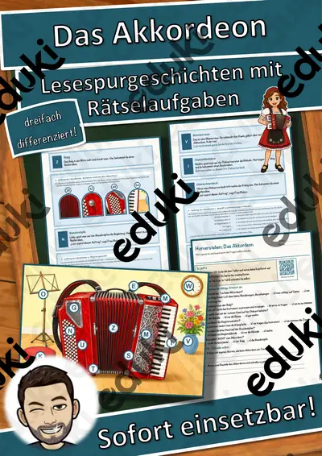
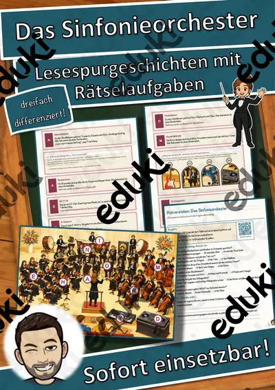
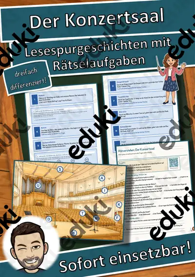
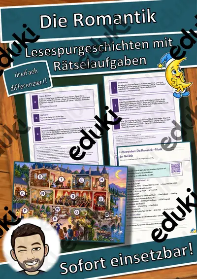
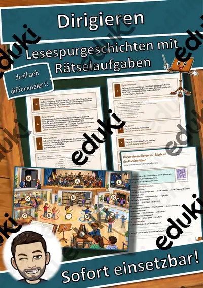
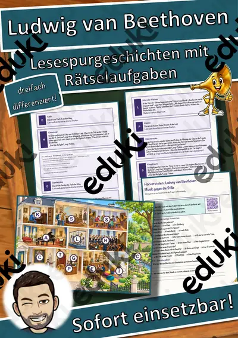
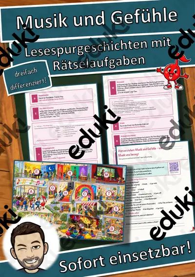
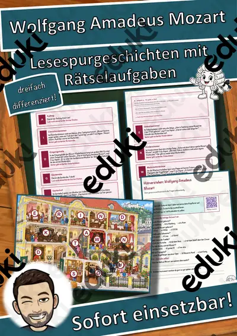

Lesespur: Blues und Gospel: Stimmen der Hoffnung – Lesespurgeschichte mit Rätseln (Klasse 9)

Lesespur: Das Akkordeon – Lesespurgeschichte mit Rätseln (Klasse 8)

Lesespur: Das Cajón – Lesespurgeschichte mit Rätseln (Klasse 8)

Lesespur: Das Klavier – Lesespurgeschichte mit Rätseln (Klasse 8)

Lesespur: Das Rondo und musikalische Formen: wie Musik gebaut ist – Lesespurgeschichte mit Rätseln (Klasse 6)

Lesespur: Das Schlagzeug – Lesespurgeschichte mit Rätseln (Klasse 8)

Lesespur: Das Sinfonieorchester – Lesespurgeschichte mit Rätseln (Klasse 8)

Lesespur: Das Tonstudio – Lesespurgeschichte mit Rätseln (Klasse 9)

Lesespur: Das Vibraphon – Lesespurgeschichte mit Rätseln (Klasse 8)

Lesespur: Das Weihnachtsoratorium: Chor, Arie und Rezitativ – Lesespurgeschichte mit Rätseln (Klasse 7)

Lesespur: Das Xylophon – Lesespurgeschichte mit Rätseln (Klasse 8)

Lesespur: Der Dudelsack – Lesespurgeschichte mit Rätseln (Klasse 8)

Lesespur: Der Konzertsaal – Lesespurgeschichte mit Rätseln (Klasse 8)

Lesespur: Der Plattenspieler – Lesespurgeschichte mit Rätseln (Klasse 8)

Lesespur: Die Band: vom Proberaum auf die Bühne – Lesespurgeschichte mit Rätseln (Klasse 7)

Lesespur: Die Blaskapelle: Musik im Freien – Lesespurgeschichte mit Rätseln (Klasse 3)

Lesespur: Die Geige – Lesespurgeschichte mit Rätseln (Klasse 8)

Lesespur: Die Gitarre – Lesespurgeschichte mit Rätseln (Klasse 8)

Lesespur: Die Harfe – Lesespurgeschichte mit Rätseln (Klasse 8)

Lesespur: Die Holzbläser: Flöte, Klarinette, Oboe und Fagott – Lesespurgeschichte mit Rätseln (Klasse 5)

Lesespur: Die Kirchenorgel – Lesespurgeschichte mit Rätseln (Klasse 8)

Lesespur: Die Klaviatur: Stammtöne, Halbtöne und Vorzeichen – Lesespurgeschichte mit Rätseln (Klasse 6)

Lesespur: Die Pauke – Lesespurgeschichte mit Rätseln (Klasse 8)

Lesespur: Die Posaune – Lesespurgeschichte mit Rätseln (Klasse 8)

Lesespur: Die Romantik: Musik der Gefühle – Lesespurgeschichte mit Rätseln (Klasse 9)

Lesespur: Die Tonleiter: Dur und Moll – Lesespurgeschichte mit Rätseln (Klasse 6)

Lesespur: Die Trompete – Lesespurgeschichte mit Rätseln (Klasse 8)

Lesespur: Die Wiener Klassik: Haydn, Mozart, Beethoven – Lesespurgeschichte mit Rätseln (Klasse 8)

Lesespur: Dirigieren: Musik mit den Händen führen – Lesespurgeschichte mit Rätseln (Klasse 6)

Lesespur: Eine Klanggeschichte: Musik erzählt vom Wald – Lesespurgeschichte mit Rätseln (Klasse 1)

Lesespur: Elektronische Musik: vom Theremin bis zum Laptop – Lesespurgeschichte mit Rätseln (Klasse 10)

Lesespur: Filmmusik: wie Musik Bilder lenkt – Lesespurgeschichte mit Rätseln (Klasse 9)

Lesespur: Glocken: vom Guss bis zum Geläut – Lesespurgeschichte mit Rätseln (Klasse 5)

Lesespur: Hip-Hop: Rap, DJ und Beat – Lesespurgeschichte mit Rätseln (Klasse 9)

Lesespur: Improvisation: Musik aus dem Moment – Lesespurgeschichte mit Rätseln (Klasse 8)

Lesespur: Instrumente selbst bauen: Musik aus Dose und Karton – Lesespurgeschichte mit Rätseln (Klasse 1)

Lesespur: Jazz: Musik aus New Orleans – Lesespurgeschichte mit Rätseln (Klasse 9)

Lesespur: Johann Sebastian Bach und die Musik des Barock – Lesespurgeschichte mit Rätseln (Klasse 7)

Lesespur: Johann Strauss und der Walzer: Musik zum Tanzen – Lesespurgeschichte mit Rätseln (Klasse 7)

Lesespur: Laut und leise, hoch und tief – Lesespurgeschichte mit Rätseln (Klasse 1)

Lesespur: Lieder begleiten: mit Akkorden, Bass und Rhythmus – Lesespurgeschichte mit Rätseln (Klasse 7)

Lesespur: Ludwig van Beethoven: Musik gegen die Stille – Lesespurgeschichte mit Rätseln (Klasse 6)

Lesespur: Musik der Renaissance: Notendruck, Madrigal und Hoftanz – Lesespurgeschichte mit Rätseln (Klasse 7)

Lesespur: Musik im Mittelalter: Mönche, Minnesänger und Spielleute – Lesespurgeschichte mit Rätseln (Klasse 7)

Lesespur: Musik und Gefühle: wie Musik uns bewegt – Lesespurgeschichte mit Rätseln (Klasse 3)

Lesespur: Neue Musik: Klangexperimente im 20. Jahrhundert – Lesespurgeschichte mit Rätseln (Klasse 10)

Lesespur: Notenschrift: wie Musik aufgeschrieben wird – Lesespurgeschichte mit Rätseln (Klasse 3)

Lesespur: Ohren auf!: Laute und leise Orte – Lesespurgeschichte mit Rätseln (Klasse 1)

Lesespur: Peter und der Wolf: jede Figur hat ihr Instrument – Lesespurgeschichte mit Rätseln (Klasse 3)

Lesespur: Popmusik: wie ein Hit entsteht – Lesespurgeschichte mit Rätseln (Klasse 8)

Lesespur: Programmmusik: Musik malt Bilder – Lesespurgeschichte mit Rätseln (Klasse 6)

Lesespur: Rock ’n’ Roll und Rockmusik – Lesespurgeschichte mit Rätseln (Klasse 9)

Lesespur: Wolfgang Amadeus Mozart – Lesespurgeschichte mit Rätseln (Klasse 3)

Materialpaket Lesespurgeschichten Musik Klasse 1: 9 Lesespuren mit Rätselaufgaben, dreifach differenziert

Materialpaket Lesespurgeschichten Musik Klasse 3: 9 Lesespuren mit Rätselaufgaben, dreifach differenziert

Materialpaket Lesespurgeschichten Musik Klasse 6: 8 Lesespuren mit Rätselaufgaben, dreifach differenziert

Materialpaket Lesespurgeschichten Musik Klasse 7: 8 Lesespuren mit Rätselaufgaben, dreifach differenziert

Materialpaket Lesespurgeschichten Musik Klasse 8: 22 Lesespuren mit Rätselaufgaben, dreifach differenziert
Lesespurgeschichten im Fach Musik
Die Stationen führen durch ein Instrument, eine Werkstatt oder einen Klangvorgang. Fachbegriffe werden dabei im Zusammenhang gelernt und nicht als Liste.
Jede Geschichte liegt in drei Niveaustufen vor, die sich in Textlänge, Satzbau und Aufgabenanspruch unterscheiden. Weg, Stationen und Lösungswort bleiben gleich, sodass alle Fassungen gleichzeitig in einer Klasse laufen können.
Themen auf dieser Seite
Beispiele aus dieser Sammlung: Lesespur: Glocken: vom Guss bis zum Geläut · Lesespur: Johann Strauss und der Walzer: Musik zum Tanzen · Lesespur: Ohren auf!: Laute und leise Orte · Lesespur: Die Wiener Klassik: Haydn, Mozart, Beethoven · Materialpaket Lesespurgeschichten Musik Klasse 3: 9 Lesespuren mit Rätselaufgaben, dreifach differenziert · Lesespur: Musik und Gefühle: wie Musik uns bewegt · Lesespur: Das Klavier · Lesespur: Das Akkordeon.